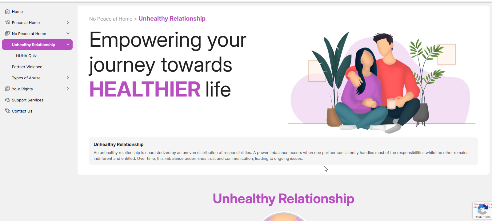
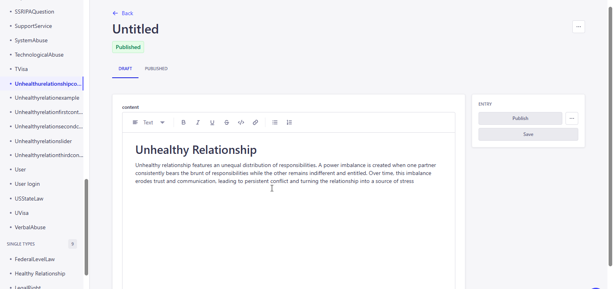
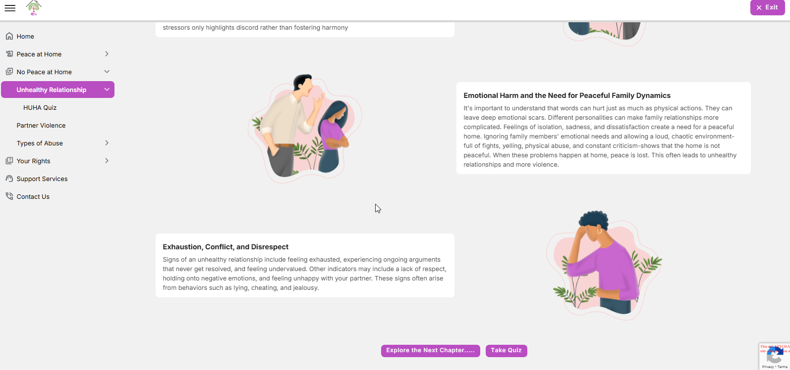
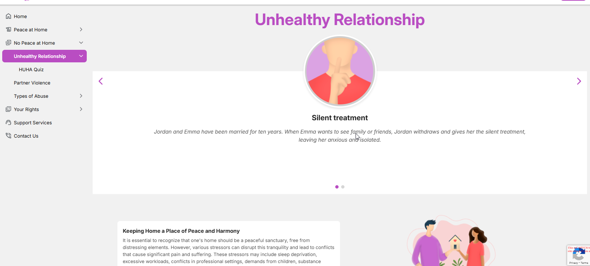
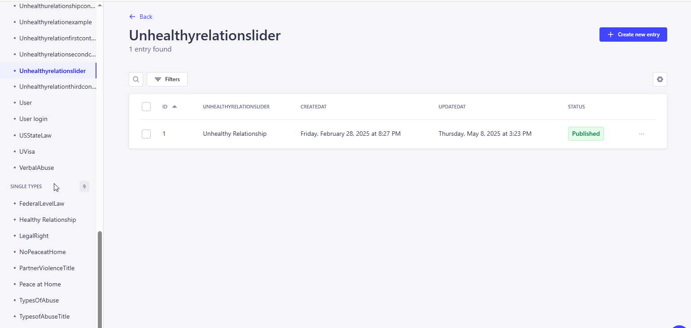

<link rel="stylesheet" href="../css/styles.css">
 
<main>
        <h2>Unhealthy Relationship</h2>
        <p> An unhealthy relationship is characterized by behaviors that negatively impact the well-being of one or both individuals involved, 
            including lack of communication, disrespect, power imbalances, and a pattern of abuse. 
            These behaviors can manifest as manipulation, gaslighting, emotional or physical abuse, and can lead to a variety of negative consequences for those involved.         
            <br><br>
        1. The user inputs a valid URL to launch the Education Module and the URL is : 
           <a target="_blank" href=https://happy-grass-02e46c50f.6.azurestaticapps.net/unhealthyrelationship>Unhealthy Relationship</a> <br>
        2. The Unhealthy Relationship page that shows the content for the topics and Sliders<br> 
            <br><br>
           The administrator must access the CMS site in order to add, edit, and update the material on the page..<br><br>
           Go to CMS > Content Manager > Select and open the 'Unhealthurelationshipcontent'from the side menu.<br>
            <br>
           Update the content if required and Click on Publish to make the changes refelects in the application. <br><br>        
        3. It also have some topices about the conflicts within the family, Toxice Relationship and IPV etc.,and the admin can update the topic that is based on the need<br>
            <br><br>
           Also, the user can add/Edit and delete the content over here in CMS site >Content Mangaer>Select and open the relevant menu from the side menu list.<br>
            <br><br>
        <h4><b><u>Unhealthy Relationship Slider</u> </b></h4>  
        4. A slider with forward and backward arrows at the bottom of the page allows the user to navigate between the sliders..<br>
           All these slider contents are stored in the CMS with its images and user can able add/edit and updated the content based on the requirments <br> 
            <br><br>
           <u>New Entry / Update the Existing Slider Content.</u><br>
           For Home Sliders: Go to CMS > Control Manager > Select and open 'Unhealthyrelationslider'> 
           Click on Create new Entry for adding the new or open the exisiting content, update and save it.<br>   
            <br>
           Update the content if required and Click on Publish to make the changes refelects in the application. <br>
       
        </p>
    </main>